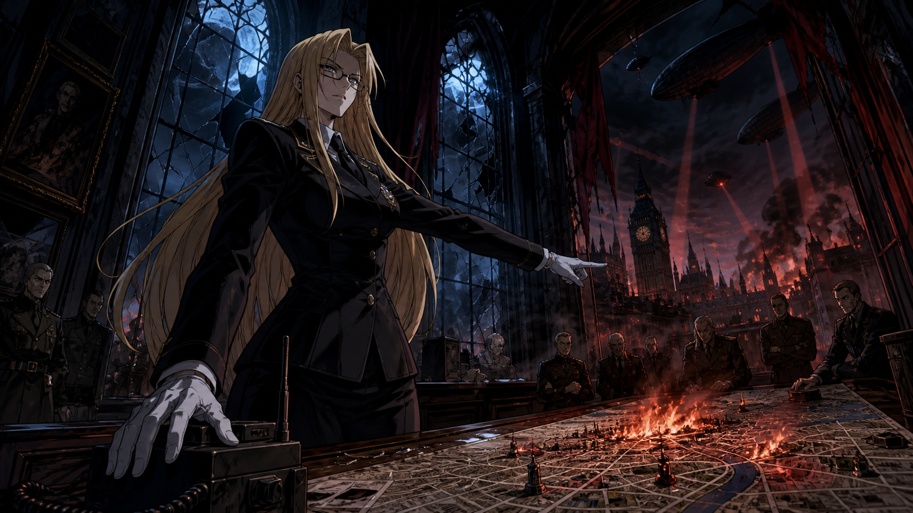
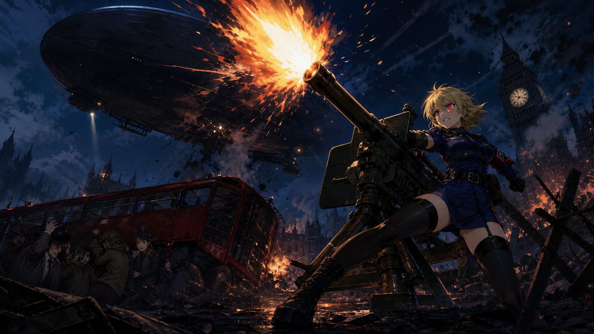
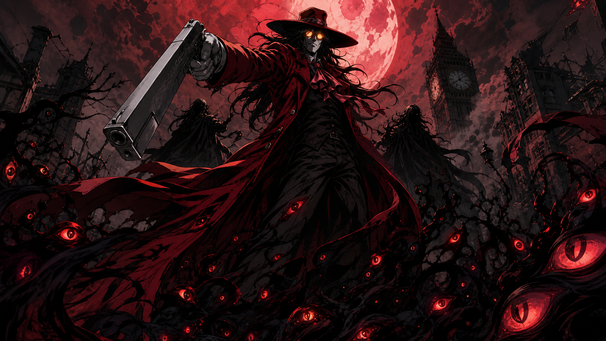
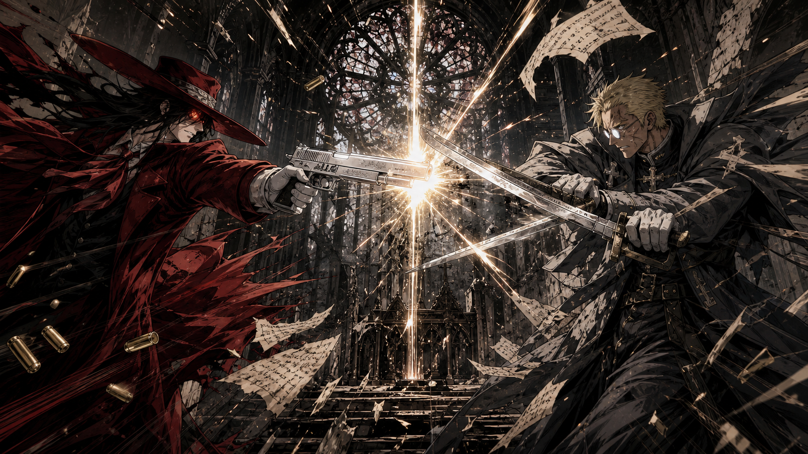
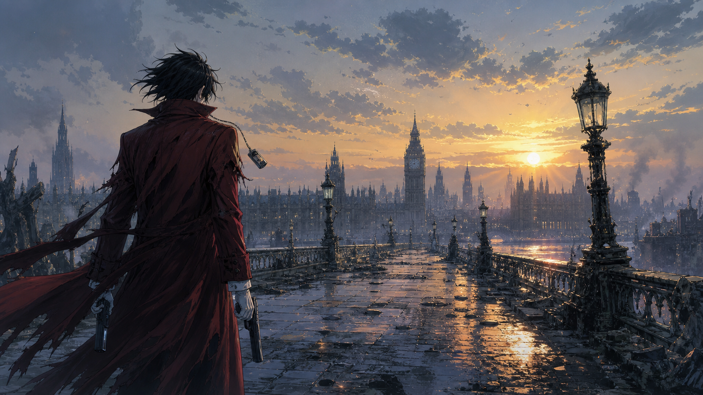

ACT 01 — COMMAND
왕립국교기사단,
최후의 명령
정체불명의 비행선이 런던의 하늘을 뒤덮는다. 도시가 붉은 불길에 잠긴 순간, 인테그라 헬싱은 오래 봉인해 둔 이름을 조용히 부른다.
“알루카드. 모든 제한을 해제한다.”

INTEGRA

DOOOOM!
SERAS
ACT 02 — AWAKENING
경찰소녀의
붉은 눈
세라스는 홀로 바리케이드를 지킨다. 두려움은 사라지지 않았지만, 이제 도망치지 않는다. 그녀는 인간을 지키기 위해 괴물의 힘을 받아들인다.
“여기는… 한 발짝도 못 지나가!”
ACT 03 — NO LIFE KING
죽음의 강이
문을 연다
안개 속에서 붉은 코트가 펄럭인다. 알루카드가 미소 짓자, 수백 년의 어둠이 런던의 거리를 뒤덮는다. 총성은 음악이 되고, 그림자는 그의 군대가 된다.
“자, 전쟁을 시작하지.”

ALUCARD
BANG

AMEN!
ACT 04 — RIVAL
괴물과 성자의
마지막 문답
폐허가 된 광장에서 알루카드와 안데르센이 마주 선다. 하나는 괴물로 남기를, 다른 하나는 인간을 버리고서라도 괴물을 쓰러뜨리기를 택한다.
“인간으로서 나를 쓰러뜨렸어야지.”
ACT 05 — MASTER
새벽을 향한
한 발
싸움이 끝나도 알루카드의 밤은 끝나지 않는다. 인테그라의 목소리가 무전기 너머로 들려온다. 돌아오라는 단 하나의 명령. 그는 처음으로 총구를 내리고, 피어나는 새벽을 바라본다.
“Yes, my Master.”

THE BIRD OF HERMES